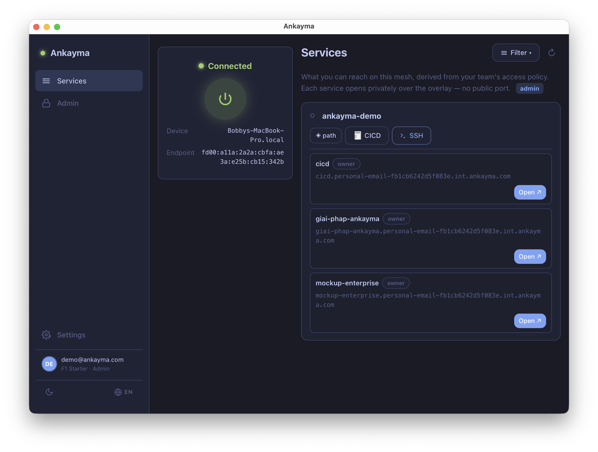

Your first win — NoKey SSH from your phone into your laptop (5 minutes)
SSH from your iPhone into your MacBook — no key, no bastion, no public port, and you'll Prove It at the end.
The MacBook is the target — the machine you'll reach. ~2 min
- Install the Ankayma desktop app and open it — you'll land on the welcome screen.
- Click GitHub and approve access in the browser. The app signs you in automatically; this first sign-in creates your free F0 space. (No browser? Click "Enter a token instead" and paste the session token.)
- On Devices, click Connect. macOS asks for your password once — a network device needs admin rights.
- You'll see "You're in the mesh" with your node address. The target is live.

The iPhone is the client — where you'll type. It joins the same account. ~1 min
- On the MacBook, go to Devices → Add a device → show a QR.
- On the iPhone, install Ankayma and tap Scan QR on the welcome screen.
- Scan the MacBook's QR. The iPhone enrols into the same account — no second GitHub login.
- Tap Connect. Both machines are now on your mesh.
NoKey SSH — a shell on your laptop, from your phone, with no static key. ~1 min
- On the iPhone, open Services.
- Find your MacBook and tap SSH.
- You're in a shell on your laptop — no bastion, no static key, no public port. Every session lands in your audit ledger.

Prove It — confirm the vendor was never on the wire. ~30 s
- Back on Services, tap ◈ path next to the MacBook.
- Read the path chain: direct peer-to-peer, the real endpoint, and Vendor in path: No ✓.
- You just proved the session went straight between your two devices — see Prove it for what each row means.
◈ Proof: no bastion, no static key, no public port — and the path chain shows the vendor was never on the wire.
getting-started-04-path-chain.png
The path chain panel: direct peer-to-peer, Vendor in path No
Reaching a server (a VPS or home box) works the same way: install the agent there so it becomes another target, then SSH into it from any of your devices.
Prefer a browser app? Instead of SSH, reach an internal web app with NoVPN — a private name only your mesh resolves, opened in your browser. See Subdomains.
Where to next
- Keep going solo — hitting the free limits (10 devices, 5 private names), or want a second factor and raw-TCP tunneling? → Upgrade to F0-Plus.
- Bring a team — teammates, shared access rules, an admin console? → Members and Access, on a team tier. See Upgrade.
What each tier includes is laid out in Tiers.